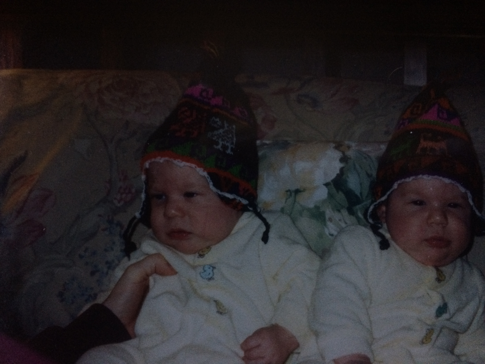
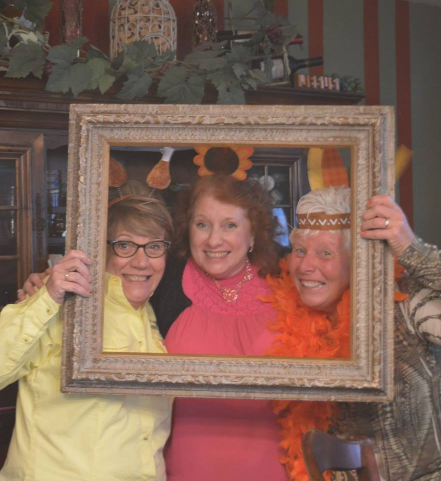
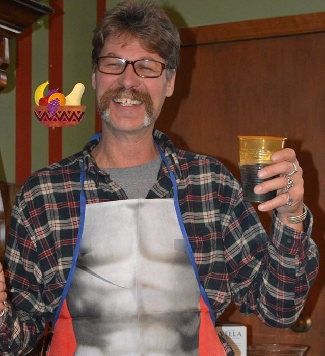
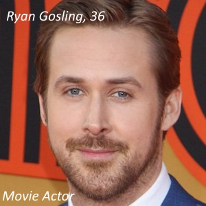
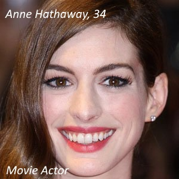
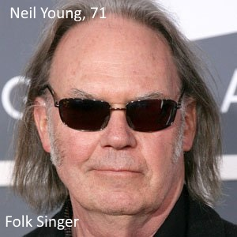
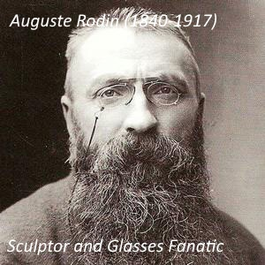
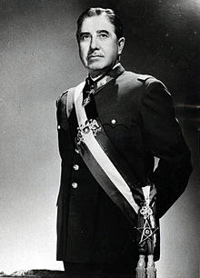
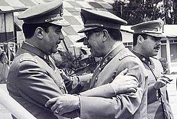
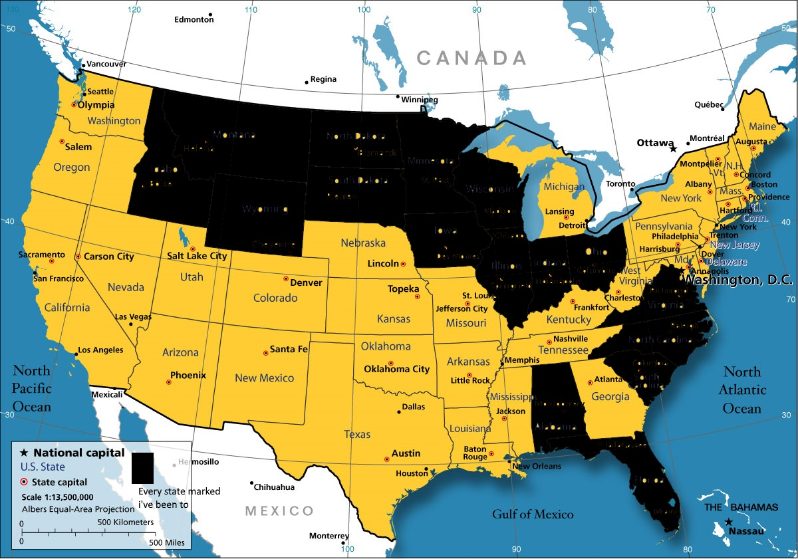

My Name is Terrence Vertina, I was born in the month of November, the 12, of 2000.
I was born in Regions hospital in St.Paul.
When I was born, so was my twin brother Matthew, my Aunt gave my parents the song "With Arms Wide Open" by Creed, on the day of my birth, this song was #1 on the Billboard Hot 100
Some more quick facts about me.
In 2009 I was diagnosed with Celiac Disease, a genetic autoimmune disorder that makes the ingestion of gluten lead to damage to the small intestine.
Past

Some infomation about Baby me.
I was born 7 weeks premature, weighing 5 pounds and being just 19 & 1/4th inches tall.
Family
my family consists of me, my mother and father, my brother, and my pet dog,Ava.
Me, I'm in your class

My Mother, Angela (the one in the middle)

My Father,Troy, showing off his "six pack"
My Brother, Matt, he's uglier then me.
My Dog, Ava, who's pictures always turn out the best.
Popular song on my birthday
The most popular song the day I was born was, Creed's - With Arms Wide Open.
People I share my Birthday with:
November 12




Elementary School
I had school from Kindergarten to 3rd grade at Washington Elementary (now Anoka Middle School for the Arts - Washington Campus) after it closed I went to Wilson Elementary.
I hung out with a few friends, such as my Friend Dylan, who now lives in East Bethel, and my boy Ethan who still goes to Anoka with me.
Dylan,a boat captain of the "Minnesota sea's".Ethan, helping me out with a video for school.
Groups
When I was in elementary school, I was a part of Boy Scouts Pack 612
These are the people I can name off the top of my head, I'm sure i've missed someone.
Memories
The thing I remember the most, comes from last year, my 9th grade year.My hand was cut open by a fellow classmate with a doorstop
This year, I fondly remember both Metal tech and my Electronics electives the most.
Role Model


General Pinochet
The 31st President of Chile (in office 1974-1990)
He was elected after a U.S. backed coup d'état that overthrew the democratically elected socialist Unidad Popular goverment of Salvador Allende and ended civilian rule.
The reason he's my role model
not only did he dress real well, but he also defeated over 3,095 Communist's with "free helicopter rides". Some would call his methods "cruel and unusual" but I see that he did what he thought was best for his country, even if that meant eliminating the threat himself.
My Favorites
Category
Thing
Why
Food
Wild Rice Soup
It always tastes good because its soup, and it warms you up.
Restaurant
Mancini's
The best steaks and Lobster i've ever tasted.
Music Genre
90's Alt
has a nice feeling to it.
Restaurant
Mancini's
The best steaks and Lobster i've ever tasted.
Artist
Alice In Chains
Best Vocals & Riffs
Movie
Space Chimps
It stars Andy Samberg, need I say more?
Color
Orange
#FFA500, best hex code, and is a nice mix of harsh red and warm yellow.
Favorite Quote
"you go to heaven for the climate and hell for the company"~Mark Twain
The place's i've been

What's the best class in high school.
I would have to say my top 3 would have to be Electronics, Web page Coding, and Gym.